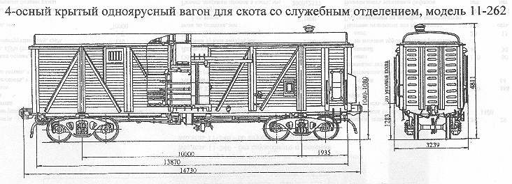

Назначение: для перевозки живности на дальные расстояния
Параметры
| Номер проекта | 262.00.000 |
| Технические условия | ТУ24.05.842-84 |
| Модель вагона | 11-262 |
| Тип вагона | 962 |
| Изготовитель | АВЗ |
| Грузоподъемность, т | 26,4 |
| Масса тары вагона, т | 25,75 |
| Нагрузка: статическая осевая, кН(тс) |
127,77(13,04) |
| погонная, кН/м(тс/м) | 34,7(3,54) |
| Скорость конструкционная, км/ч | 120 |
| Габарит | 1-Т |
| База вагона, мм | 10000 |
| Длина, мм: по осям сцепления автосцепок |
14730 |
| по концевым балкам рамы (длина рамы) | 13870 |
| Ширина максимальная, мм | 3239 |
| Высота от уровня верха головок рельсов, мм: максимальная |
4811 |
| до уровня пола | 1283 |
| Количество осей, шт. | 4 |
| Модель 2-осной тележки | 18-100 |
| Наличие переходной площадки | нет |
| Тоже с ручным тормозом | нет |
| Наличие стояночного тормоза | есть |
| Объем кузова, м³ | 90,5 |
| Длина кузова внутри, мм | 10610 |
| Ширина кузова внутри, мм | 2720 |
| Высота грузового помещения от пола до потолка,мм | 2737 |
| Длина грузового помещения,мм | 10610 |
| Размеры дверного проема в свету, мм | 2000х1960 |
| Площадь пола,м² | 28,86 |
| Вместимость баков для воды, л | 1300 |
| Вместимость вагона максимальная, голов: овец |
88 |
| свиней | 34 |
| крупного рогатого скота | 15 |
| Наличие отделения для проводника | есть |
| Год постановки на серийное производство | 1981 |
| Возможность установки буферов |